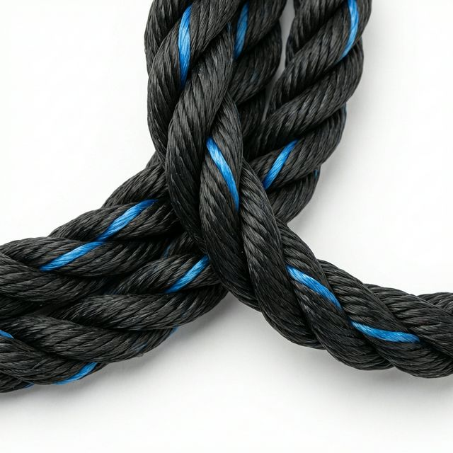

Trava Quedas NR18 / NR19 — Nylon Seda. Carga de ruptura de 2.212 N. A corda de segurança para trabalho em altura, pintura de prédios e resgate profissional.
CORDA POLIAMIDA TRAVA QUEDAS NR18 / NR19
A Corda Poliamida Riomar, conhecida como Nylon Seda, é fabricada com fibras de poliamida de alta tenacidade. Atende às exigências das normas NR18 (Condições de Trabalho na Construção Civil) e NR19 (Explosivos), sendo certificada para uso como trava-quedas em trabalhos em altura.
Disponível na bitola de 12mm, cor branca, em rolos de 100m e 250m. Com carga de ruptura de 2.212 N, oferece a segurança necessária para pintura de prédios, lavagem de fachadas, resgate e atividades verticais profissionais.

| Bitola | Cor | Emb. | Metragem | Carga Ruptura (N) |
|---|---|---|---|---|
| 12 mm | Branca | Rolo | 100 m / 250 m | 2.212 |
Certificada NR18 / NR19
Entre em contato com nosso representante e receba uma proposta personalizada.